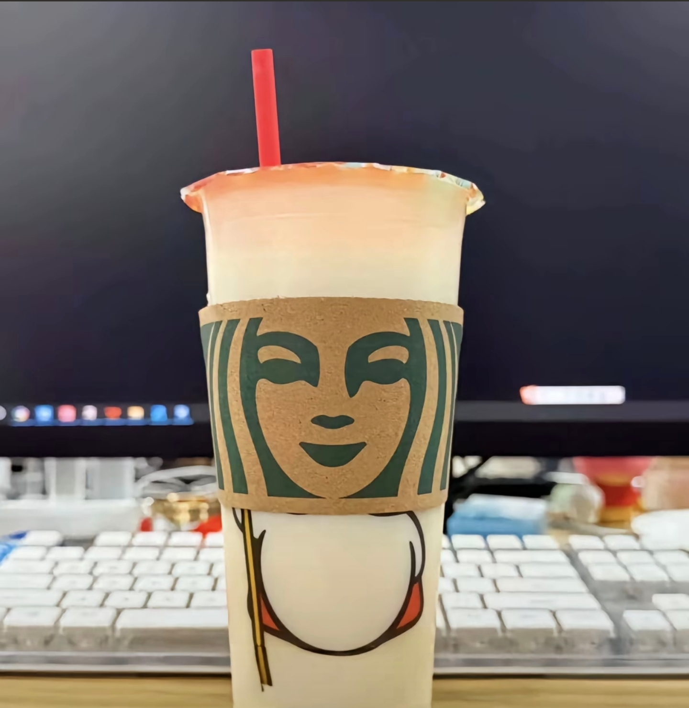

一听到这首歌就想起一个汽车博主老发m4[黑脸]
误打误撞的相识 或许原本就是个错误
我好像知道主播说的这个原视频，昨天晚上就是看这个视频睡着了，然后不知道是脸还是手按到手机上了，结果把自拍发评论了。。一觉睡醒全是骂我的[黑脸]我还没来得及解释呢 评论就被删了[黑脸][黑脸][黑脸]
[憨笑]嗯，刘姥姥说的“大火烧了毛毛虫”
所以说[看]研究红学的，其实是在隐晦的研究被清朝修改的历史
而且他们说主旨是：悼明之亡，揭清之失[惊喜] 看到新的视角了[舔屏]
薛宝钗就是清朝统治者，她们家住东北角，而且一直图谋着待在贾家不走，最后薛家（满人）抢了林黛玉（崇祯）的婚姻（江山），暗示清朝鸠占鹊巢，林黛玉也像崇祯一样玉带林中挂（上吊自尽）[黑脸]
贾宝玉，代表玉玺，所以爱吃印泥。 林黛玉代表崇祯。薛宝钗代表皇太极。所以俩人也是天下之争。 王熙凤是魏忠贤，都不识字，但能力很强。 贾政代表嘉靖帝，都在修道，不问世事。 香莲代表南明帝，夏金桂代表吴三桂，也是最后勒死南明帝的人。 刘姥姥代表大清，巧姐代表大明公主。 这些是红楼解析的一个派别，认为红楼梦是写明朝历史的，是明末一帮书生写的，书生和明末皇室后裔关系密切，是借书写家国仇恨的，因为清朝对明史篡改很多。 感兴趣的朋友，可以去看这两个博主的讲解@大车轱辘 @正电兔
哇！我就说红学会那么多人研究那么多年研究什么，太牛了，这些人
晴雯的名字也细思恐极，明字的月被青代替，中华的文化被雨（氵）遮盖。这书是真的字字泣血，满腔亡国恨。
推荐大家看一下癸酉本石头记，虽然文笔巨差巨差，我怀疑是有人有原本，但是又想私藏，所以他用自己的大白话翻译一遍了再发出来的。原本被他私藏了。里面的情节真的巨神，每个人物都对上了判词，大小伏笔也都填坑吻和了
难怪在清朝是禁书，而且满清敏感肌，提到明的都杀了
刘姥姥进大观园的时候说大火烧了毛毛虫，看清朝的国旗就啥都明白了[看][看]
我看到有人说，为啥反清复明厉害，因为满清那个时代实际上像鬼一样，所以才写的出来聊斋志异，实际上的大清社会恐怕比那些条约还恐怖……
朱元璋应叹息（贾珠，贾元春，贾璋，贾迎春，贾探春，贾惜春）
所以玉带林中挂，黛玉的真正结局应该和崇祯一样是在树上上吊si的[发呆]
我最震惊其实还是：曹雪芹＝抄写勤
有没有一种可能连曹雪芹的名字都是假的，我当时听这个名的时候还以为他是个女生[泪奔]，会不会这本书本来就是一群人写出来的？有男有女，只是起了个曹雪芹的名，听说这书出版的时候被列为禁书[投降]
越看越觉得清朝真的好没用啊。感觉是几千年历史的青烟冒完了，出来一个废物。[憨笑][憨笑]
茗烟闹学堂那里真的很直白，“姓金的你什么东西，出来动一动你茗大爷”有够贴脸的
我自从知道这个角度 把原著扣字读一遍 你会发现巧合细节还有很多 比如说作者强调了好几次薛家住东北角
是的 因为当是清朝人为了毁掉明朝的巅峰 把明朝的文化结晶 也就是我们汉人的文化都焚书坑儒了 红楼梦为了给后人留下明朝 所以不敢明着写 都是暗戳戳的在写明朝
而且有说，为什么《红楼梦》没有后半部，不是不在了，是不能传，被禁了，因为讲的是屠han[九转大肠]
看完 大车轱辘 这个博主解说，红楼梦的整个故事逻辑就理清楚了。为什么我们以前读不懂红楼梦？因为一直被误导[捂脸]
红就是朱，不然哪来的忽然出现一座红楼[暗中观察]
真粉丝抢不到票 抢到票的稻香词都记不住[捂脸][捂脸][捂脸]
杰伦到底还有多少歌我没有发掘到
你可以珍惜每一个人但不要挽留任何人
认真回答 最近累不累[流泪]
颜人中的受众群体是什么星座啊[调皮][调皮][调皮]（射手）
“这是什么歌” “祝你爱我到天荒地老” “真的假的” “嗯”
白景琦：你们吃的也太苦了点了。[流泪] 屠二爷：就这趟苦，以前你不跟着，我们哥俩都逛窑子。[不失礼貌的微笑]
三体人都不知道川普想做什么
川普的支付宝信誉度都不能扫充电宝
川普孤立了所有人[捂脸]
以前看不懂这点，突然get了一点 他说爱你的时候，他懂了她的这个语言和情绪，读取正确，能读取正确是因为爱，很多人对于女人这个状态回馈的是针尖对锋芒
我以前根本就不明白飘飘到底在干啥，莫名其妙。现在再看泪流满面。她怎么这么没有安全感，看起来这么的可怜。更离谱的是，男主一瞬间读懂了她所有的不安和期待[流泪][流泪][流泪]这个世界，有几个人会这么懂
房子大就是好，一家人谈恋爱都不用出门的。
抖音就是厉害哈，我学到哪儿都知道[黑脸]
雷雨，唯一语文没打瞌睡的一篇[黑脸]
小说妹最喜欢看的一篇 [憨笑]小妈文学 骨科
[憨笑][弱]说实话 我读雷雨这篇文章的时候 我觉得挺无辜 的是周冲 [憨笑]
不开玩笑我高一演的繁漪，当时同班同学都以为我真的疯了
周冲最惨[黑脸]暗恋不得还死了[黑脸]
唯一心疼的，他什么也没干，出去追四凤电死了[泣不成声]
[憨笑]我们一个同学演周冲就一句台词“爸爸！这是不公平的！” “你少多嘴 出去！@星迹 @真的会谢 @听风说愛你 ”
全剧最无辜的就是周冲
在座的各位用什么牌子的头油啊
干净的圈子，规律的生活，每天一杯星巴克 不是炫富，只是为数不多的爱好。 #每天一杯星巴克🌚 
各位公子 你们抽啥牌子的香烟[看]
全家碰不到[感谢][感谢][感谢][感谢][感谢][感谢][感谢]
Read more: